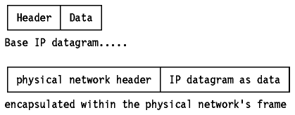
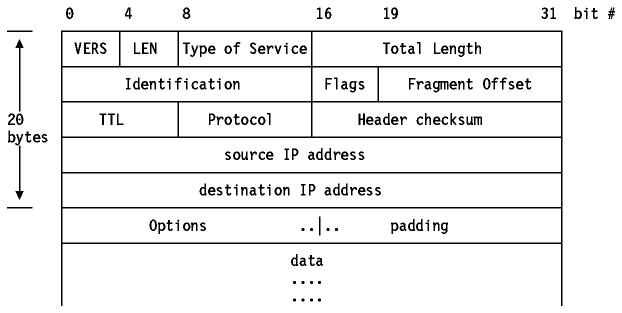
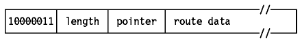
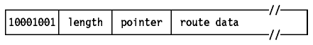
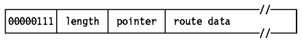
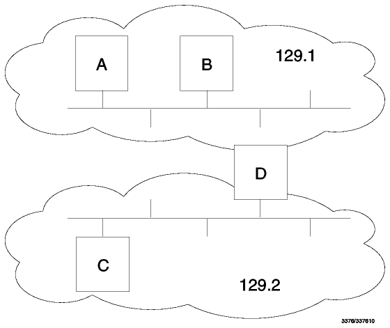
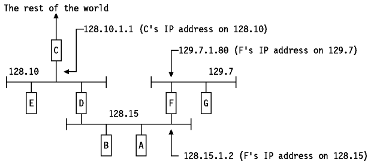
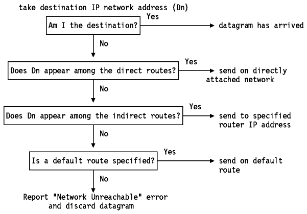

Table of Contents
Table of Contents  References
ReferencesIP is a standard protocol with STD number 5 which also includes ICMP (see Internet Control Message Protocol (ICMP)) and IGMP (see Internet Group Management Protocol (IGMP)). Its status is required.
The current IP specification can be found in RFCs 791, 950, 919 and 922, with updates in RFC 1349.
IP is the protocol that hides the underlying physical network by creating a virtual network view. It is an unreliable, best-effort connectionless packet delivery protocol.
It adds no reliability, flow control or error recovery to the underlying network interface protocol. Packets (datagrams) sent by IP may be lost, out of order, or even duplicated, and IP will not handle these situations. It is up to higher layers to provide these facilities.
IP also assumes little from the underlying network mechanisms, only that the datagrams will ``probably'' (best-effort) be transported to the addressed host.
The Internet datagram (IP datagram) is the base transfer packet in the
Internet protocol suite. It has a header containing information for IP, and
data that is relevant only to the higher level protocols.

Figure: Base IP Datagram
The IP datagram is encapsulated in the underlying network's frame, which
usually has a maximum length or frame limitation, depending on the hardware
used. For Ethernet, this will typically be 1500 bytes. Instead of limiting the
IP datagram length to some maximum size, IP can deal with
fragmentation and re-assembly of its datagrams. In particular,
the IP standard does not impose a maximum size, but states that all subnetworks
should be able to handle datagrams of at least 576 bytes.
Fragments of a datagram all have a header, basically copied from the original datagram, and data following it. They are treated as normal IP datagrams while being transported to their destination. Note, however, that if one of the fragments gets lost, the complete datagram is considered lost since IP does not provide any acknowledgment mechanism, so the remaining fragments will simply be discarded by the destination host.
The IP datagram header is a minimum of 20 bytes long:

Figure: IP Datagram Format
Where:
A detailed description of the type of service can be found in the RFC 1349.
When an IP datagram travels from one host to another, it can cross different physical networks. Physical networks have a maximum frame size, called the Maximum Transmission Unit (MTU), which limits the length of a datagram that can be placed in one physical frame. Therefore, a scheme has been put in place to fragment long IP datagrams into smaller ones, and to reassemble them at the destination host. IP requires that each link has an MTU of at least 68 bytes, so if any network provides a lower value than this, fragmentation and re-assembly must be implemented in the network interface layer in a way that is transparent to IP. 68 is the sum of the maximum IP header length of 60 bytes and the minimum possible length of data in a non-final fragment (8 bytes). IP implementations are not required to handle unfragmented datagrams larger than 576 bytes, but most implementations will handle larger values, typically slightly more than 8192 bytes or higher, and rarely less than 1500.
An unfragmented datagram has all-zero fragmentation information. That is, the more fragments flag bit is zero and the fragment offset is zero. When fragmentation is to be done, the following steps are performed:
At the destination host, the data has to be reassembled into one datagram. The identification field of the datagram was set by the sending host to a unique number (for the source host, within the limits imposed by the use of a 16-bit number). As fragmentation doesn't alter this field, incoming fragments at the receiving side can be identified, if this ID field is used together with the Source and Destination IP addresses in the datagram. The Protocol field is also be checked for this identification.
In order to reassemble the fragments, the receiving host allocates a buffer in storage as soon as the first fragment arrives. A timer routine is then started. When the timer timeouts and not all of the fragments have been received, the datagram is discarded. The initial value of this timer is called the IP datagram time-to-live (TTL) value. It is implementation dependent, and some implementations allow it to be configured; for example AIX Version 3.2 provides an ipfragttl option with a default value of 60 seconds.
When subsequent fragments of the datagram arrive, before the timer expires, the data is simply copied into the buffer storage, at the location indicated by the fragment offset field. As soon as all fragments have arrived, the complete original unfragmented datagram is restored, and processing continues, just as for unfragmented datagrams.
Note: IP does not provide the reassembly timer. It will treat each and every datagram, fragmented or not, the same way, that is, as individual messages. It is up to the higher layer to implement a timeout and to look after any missing fragments. The higher layer could be TCP for a connection-oriented transport network or the application for connectionless transport networks based upon UDP and IP.
The netstat command may be used on some TCP/IP hosts to list details of fragmentation that is occurring. An example of this is the netstat -i command in TCP/IP for OS/2.
The IP datagram Options field allows two methods for the originator of an IP datagram to explicitly provide routing information and one for an IP datagram to determine the route that it travels.
The Loose Source Routing option, also called the Loose
Source and Record Route (LSRR) option, provides a means for the source of an IP
datagram to supply explicit routing information to be used by the routers in
forwarding the datagram to the destination, and to record the route followed.

Figure: Loose Source Routing Option
Whenever a datagram arrives at its destination and the source route is not empty (pointer < length) the receiving host will:
This procedure ensures that the return route is recorded in the route data (in reverse order) so that the final recipient uses this data to construct a loose source route in the reverse direction. This is a loose source route because the forwarding router is allowed to use any route and any number of intermediate routers to reach the next address in the route.
Note: The originating host puts the IP address of the first intermediate router in the destination address field and the IP addresses of the remaining routers in the path, including the target destination are placed in the source route option. The recorded route in the datagram when it arrives at the target contains the IP addresses of each of the routers that forwarded the datagram. Each router has moved one place in the source route, and normally a different IP address will be used, since the routers record the IP address of the outbound interface but the source route originally contained the IP address of the inbound interface.
The Strict Source Routing option, also called the
Strict Source and Record Route (SSRR) option, uses the same principle as loose
source routing except that the intermediate router must send the
datagram to the next IP address in the source route via a directly connected
network and not via an intermediate router. If it cannot do so it reports an
error with an ICMP Destination Unreachable message.

Figure: Strict Source Routing Option
This option provides a means to record the route of an
IP datagram. It functions similarly to the source routing discussed above, but
this time the source host has provided an empty routing data field, which will
be filled in as the datagram traverses routers. Note that sufficient space for
this routing information must be provided by the source host: if the data field
is filled before the datagram reaches its destination, the datagram is
forwarded with no further recording of the route.

Figure: Record Route Option
A timestamp is an option forcing some (or all) of the routers on the route to the destination to put a timestamp in the option data. The timestamps are measured in seconds and can be used for debugging purposes. They cannot be used for performance measurement for two reasons:
The originating host must compose this option with a large enough data area to hold all the timestamps. If the timestamp area becomes full, no further timestamps are added.
An important function of the IP layer is IP routing. It provides the basic mechanism for routers to interconnect different physical networks. This means that an internet host can function as a normal host and a router simultaneously.
A basic router of this type is referred to as a router with partial routing information, because the router only has information about four kinds of destination:
Additional protocols are needed to implement a full-function router that can exchange information with other routers in remote network. Such routers are essential except in small networks, and the protocols they use are discussed in Routing Protocols.
If the destination host is attached to a network to which the source host is also attached, an IP datagram can be sent directly, simply by encapsulating the IP datagram in the physical network frame. This is called direct routing.
Indirect routing occurs when the destination
host is not on a network directly attached to the source host.
The only way to reach the destination is via one or more
routers. The address of the first of these routers (the first hop) is
called an indirect route. The first hop address is the only information
needed by the source host: the router which receives a datagram has
responsibility for the second hop and so on.

Figure: Direct and Indirect IP Routes - Host A has a direct
route to hosts B and D, and an indirect route to host C. Host D is a
router between the 129.1 and 129.2 networks.
A host can tell whether a route is direct or indirect by examining the network number and subnet number parts of the IP address.
The host needs to be able to address the target correctly using a lower-level protocol than ARP. This can either be done automatically using a network-specific protocol, such as ARP (see Address Resolution Protocol (ARP)), which is used on broadcast LANs, or by statically configuring the host, for example when an MVS host has a TCP/IP connection over an SNA link.
IP implementations may also support explicit host routes, that is, a route to a specific IP address. This is common for dial-up connections using Serial Line Internet Protocol (SLIP) which does not provide a mechanism for two hosts to inform each other of their IP addresses. Such routes may even have the same network number as the host, for example on subnets composed of point-to-point links. In general, however, routing information is done by network number and subnet number only.
Each host keeps the set of mappings between destination IP addresses and the IP addresses of the next hop routers for those destinations in a table called the IP routing table.
Three types of mappings can be found in this table:
See the network in Figure - Example IP
Routing Table for an example configuration.

Figure: Example IP Routing Table
The routing table of host D will contain the following entries
From the foregoing discussion, one can easily derive
the steps that IP must take in order to determine the route for an outgoing
datagram. This is called the IP routing algorithm and it is shown
schematically in Figure - IP Routing
Algorithm.

Figure: IP Routing Algorithm
Note that this is an iterative process. It is applied by every host handling a
datagram, except for the host to which the datagram is finally delivered.
 Internet
Control Message Protocol (ICMP)
Internet
Control Message Protocol (ICMP)